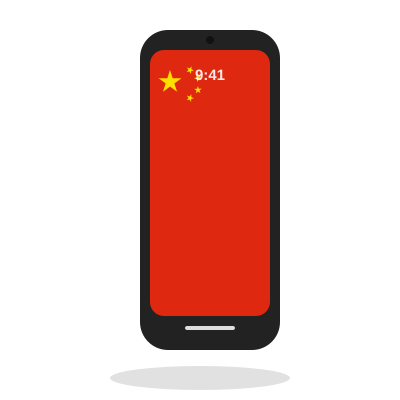

The Red Field红色底色
Red stands for revolution, and is also the traditional color of good fortune and celebration in Chinese culture. 红色象征革命,同时也是中国传统文化中喜庆与吉祥的颜色。
National Flag of the People's Republic of China 中华人民共和国国旗
Adopted in 1949, the design blends color, geometry and political history into a single, instantly recognizable emblem. 五星红旗诞生于1949年,其设计融合了色彩、几何与历史,凝练成一面辨识度极高的国旗。
Red stands for revolution, and is also the traditional color of good fortune and celebration in Chinese culture. 红色象征革命,同时也是中国传统文化中喜庆与吉祥的颜色。
The large golden star represents the leadership of the Communist Party of China. 大五角星象征中国共产党的领导。
They represent the great unity of the Chinese people under that leadership — traditionally described as the working class, the peasantry, the urban petty bourgeoisie, and the national bourgeoisie. 象征在中国共产党领导下全国人民的大团结——传统上分别代表工人阶级、农民阶级、城市小资产阶级和民族资产阶级。
Each small star has one point aimed precisely at the center of the large star, symbolizing unity gathered around a common center. 每颗小星均有一角正对大星中心,象征紧密团结、众星拱月。
Chosen to stand out brilliantly against the red field, symbolizing the light of revolution illuminating the country. 在红色底色上熠熠生辉,象征革命光芒普照大地。
On 27 September 1949, days before the founding of the People's Republic of China, the Chinese People's Political Consultative Conference formally adopted the Five-Star Red Flag as the national flag. It was first raised over Tiananmen Square on 1 October 1949, at the ceremony proclaiming the new republic. 1949年9月27日,在中华人民共和国成立前夕,中国人民政治协商会议第一届全体会议正式通过五星红旗为国旗。同年10月1日,在开国大典上,五星红旗首次在天安门广场升起。
The winning design came from Zeng Liansong, an economist and amateur artist from Zhejiang, submitted during a nationwide public competition that drew nearly 3,000 entries. His original sketch included a hammer and sickle inside the large star; the selection committee removed it to keep the design simple and distinct from the emblems of other socialist states. 获选设计出自浙江籍经济学家、业余美术爱好者曾联松之手。当时面向全国征集国旗图案,共收到近3000件应征稿。他最初的设计在大星内绘有镰刀锤子图案,评选委员会为使图案更简洁、并与其他社会主义国家的徽记有所区别,将其移除。
Formal technical standards for the flag's proportions, star geometry and colors were codified in national standards (GB 12982 for construction, GB 15092 for color). 国家标准(GB 12982 关于制法,GB 15092 关于色彩)对国旗的比例、五星的几何构造及颜色作出了正式规定。
3:2
Length-to-width ratio of the flag.旗面长与高之比。
A 30 × 20 unit grid. Large star center (5,5), outer radius 3. Small stars, outer radius 1, centered at (10,2), (12,4), (12,7), (10,9). 旗面划分为30×20单位网格。大星圆心(5,5),外接圆半径3;四颗小星外接圆半径1,圆心分别为(10,2)、(12,4)、(12,7)、(10,9)。
The official standard defines colors using physical reference samples, not digital codes — on-screen hex values are close approximations. 国家标准以实物色样而非数字色值定义颜色,因此屏幕显示的十六进制值仅为近似值。
Each small star is rotated so that one of its points aligns exactly with the center of the large star. 每颗小星的其中一角均精确指向大星中心。
Beyond flagpoles, the five-star motif appears everywhere — from packaging to vehicles to everyday electronics. 五星红旗的元素不仅出现在旗杆上,也广泛应用于包装、车辆和日常电子产品之中。

Illustrative renderings created for this site — not official or licensed products. 以上为本站制作的示意图,并非官方或授权产品。
The flag is flown on national holidays, especially National Day (1 October) and the ensuing Golden Week, as well as at government buildings, schools and border crossings year-round. It must never touch the ground, be flown upside down, or be displayed in a damaged or faded state. On days of national mourning, it is flown at half-mast. 国旗在国庆节(10月1日)及随后的黄金周等重要节日悬挂,并常年悬挂于政府机关、学校及口岸等场所。国旗不得触地、不得倒挂,亦不得使用破损、褪色的旗帜。在全国哀悼日,应下半旗志哀。